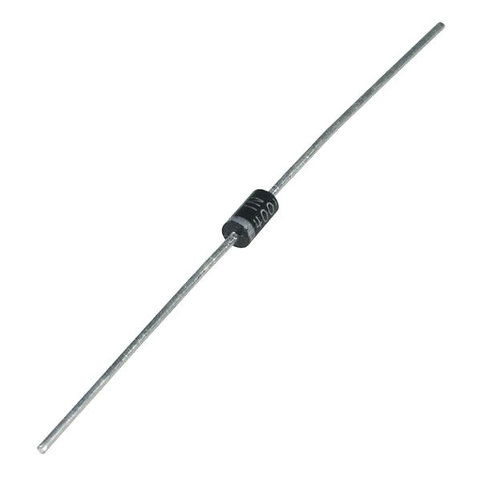
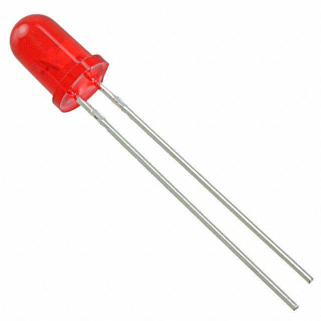
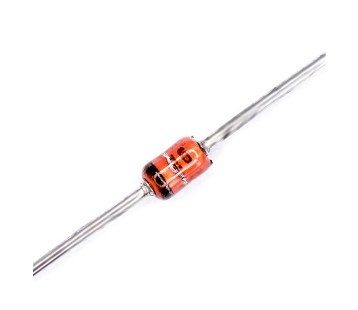
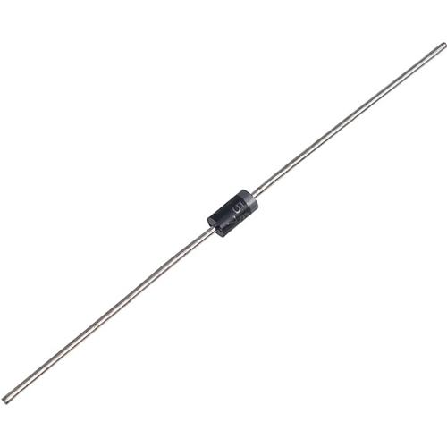
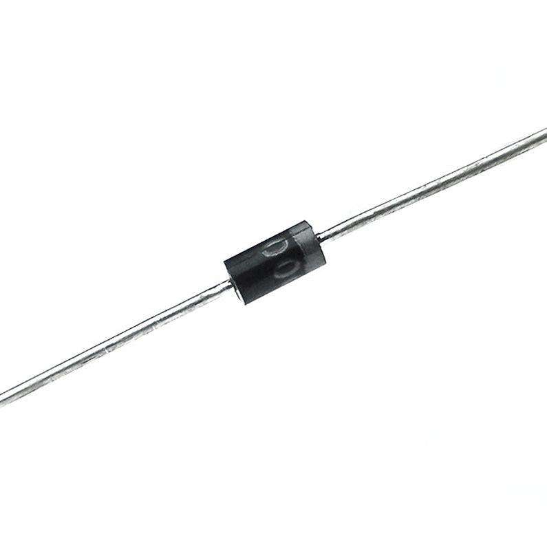
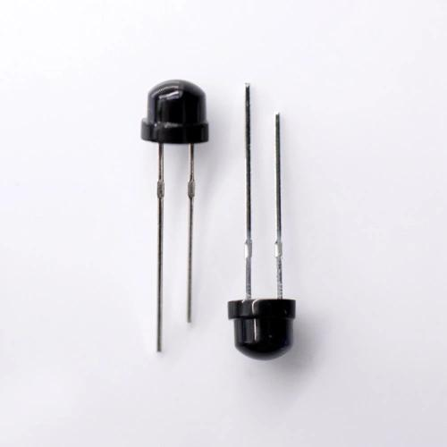
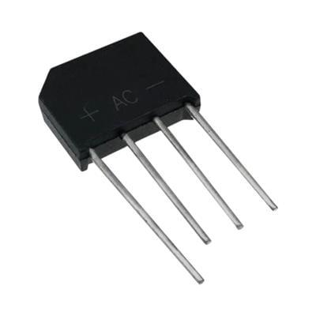

ไดโอด (Diode)
Diode
PN Junction • LED • Zener Diode • การอ่านขั้ว Anode/Cathode
PN Junction • LED • Zener Diode • Anode/Cathode polarity
- อธิบายโครงสร้าง PN Junction และการนำกระแสทางเดียวของไดโอดได้
- บอกความแตกต่างระหว่างไบแอสตรง (Forward) และไบแอสกลับ (Reverse) ได้
- อ่านกราฟคุณลักษณะ I-V และบอกแรงดันตก Vf ได้
- บอกชนิดของไดโอด (Rectifier / LED / Zener / Schottky) และการใช้งานได้
- อ่านขั้ว Anode/Cathode และตรวจสอบไดโอดด้วยมัลติมิเตอร์ได้
- อธิบายวงจรเรียงกระแสครึ่งคลื่นและเต็มคลื่นได้
- Explain the PN junction structure and a diode's one-way conduction
- Distinguish forward bias from reverse bias
- Read the I-V characteristic curve and identify the forward voltage Vf
- Identify diode types (Rectifier / LED / Zener / Schottky) and their uses
- Read Anode/Cathode polarity and test a diode with a multimeter
- Explain half-wave and full-wave rectifier circuits
ไดโอดเป็นอุปกรณ์สารกึ่งตัวนำที่ยอมให้กระแสไฟฟ้าไหลผ่านได้ทางเดียว ประกอบด้วยสารกึ่งตัวนำชนิด P และชนิด N ต่อกัน เรียกว่า PN Junction
A diode is a semiconductor device that allows current to flow in only one direction. It is made by joining P-type and N-type semiconductors, forming a PN Junction.
| ขั้วTerminal | สัญลักษณ์Symbol | คำอธิบายDescription |
|---|---|---|
| Anode (A) | + | ขั้วบวก — กระแสไหลเข้าPositive terminal — current flows in |
| Cathode (K) | − | ขั้วลบ — กระแสไหลออกNegative terminal — current flows out |
กระแสไหลจาก Anode → Cathode (Forward Bias) Current flows from Anode → Cathode (Forward Bias)
Forward Bias (ไบแอสตรง)Forward Bias
ต่อ Anode กับขั้วบวก, Cathode กับขั้วลบ → ไดโอดนำไฟฟ้า กระแสไหลผ่านได้ แรงดันตก (Vf) ประมาณ 0.6–0.7 V สำหรับไดโอดซิลิกอน
Connect Anode to +, Cathode to − → diode conducts. Forward voltage drop (Vf) ≈ 0.6–0.7 V for silicon diodes.
Reverse Bias (ไบแอสกลับ)Reverse Bias
ต่อ Anode กับขั้วลบ, Cathode กับขั้วบวก → ไดโอดไม่นำไฟฟ้า กระแสไม่ไหล (ยกเว้นกระแสรั่วเล็กน้อย)
Connect Anode to −, Cathode to + → diode blocks current (only a tiny leakage current flows).
กราฟแสดงความสัมพันธ์ระหว่างแรงดัน (V) และกระแส (I) ของไดโอด แบ่งเป็น 3 ช่วงหลัก
The I-V curve shows the relationship between voltage (V) and current (I) across three key regions.
เมื่อ V > Vf (~0.7 V) กระแสไหลพุ่งขึ้นอย่างรวดเร็ว ไดโอดนำไฟฟ้า
When V > Vf (~0.7 V), current rises sharply — diode conducts.
กระแสรั่ว (IR) น้อยมาก ระดับ µA ไดโอดแทบไม่นำไฟฟ้า
Very small leakage current (µA level) — diode barely conducts.
เมื่อ Reverse Voltage เกิน VBR กระแสทะลักกลับ (ทำลายไดโอดทั่วไป แต่ Zener ออกแบบมาใช้ตรงนี้)
When reverse voltage exceeds VBR, current surges back. Destroys normal diodes — but Zener diodes are designed for this region.
- ยอมให้กระแสไหลทางเดียว (Forward) และกั้นทางกลับ (Reverse)
- มีแรงดันตกคร่อมขณะนำกระแส (Vf) — ซิลิคอน ~0.7 V, ชอตต์กี ~0.3 V
- มีขั้ว: Anode (+) และ Cathode (−) — ต่อกลับขั้วจะไม่ทำงาน
- ใช้แปลงไฟ (Rectify), ป้องกันกลับขั้ว, ควบคุมแรงดัน, แสดงผล
- Allows current in one direction (forward), blocks the reverse
- Has a forward voltage drop (Vf) — silicon ~0.7 V, Schottky ~0.3 V
- Polarized: Anode (+) and Cathode (−) — reversed = no conduction
- Used for rectifying, reverse-polarity protection, voltage regulation, indication
เลือกไดโอดให้ดู 3 อย่าง:
① กระแสสูงสุด (IF) ต้องมากกว่ากระแสในวงจร
② แรงดันทนกลับ (VR / PIV) ต้องสูงกว่าแรงดันที่กั้น
③ แรงดันตก Vf — ยิ่งต่ำยิ่งสูญเสียน้อย 💡 Key things to check
Pick a diode by 3 ratings:
① Max current (IF) must exceed the circuit current
② Reverse voltage (VR / PIV) must exceed the blocked voltage
③ Forward drop Vf — lower means less loss

⚡ ไดโอดเรียงกระแสRectifier
ไดโอดซิลิคอนสำหรับ แปลงไฟ AC → DC ทนกระแส/แรงดันสูง แต่ตอบสนองช้า เหมาะกับความถี่ต่ำ (50–60 Hz) — เบอร์ยอดนิยมคือซีรีส์ 1N400x
Silicon diode for AC → DC rectification, with high current/voltage ratings but slow switching — best at low frequency (50–60 Hz). The 1N400x series is the classic choice.

💡 แอลอีดีLED
เปล่งแสงเมื่อมีกระแสไหลทางforward — แรงดันตกขึ้นกับสี (แดงต่ำ, น้ำเงิน/ขาวสูง) ต้องต่อตัวต้านทานอนุกรมเสมอ เพื่อจำกัดกระแส
Emits light when forward current flows — Vf depends on color (red low, blue/white high). Always needs a series resistor to limit current.

🛡️ ซีเนอร์Zener
ออกแบบให้ทำงานใน reverse bias ที่แรงดันพังทลายคงที่ (Vz) จึงใช้ อ้างอิง/ควบคุมแรงดัน ให้คงที่ได้ (เช่น 5.1 V, 12 V)
Designed to operate in reverse bias at a fixed breakdown voltage (Vz), so it provides a stable voltage reference/regulation (e.g. 5.1 V, 12 V).

⚡ ชอตต์กีSchottky
แรงดันตกต่ำและ สวิตช์เร็วมาก สูญเสียพลังงานน้อย เหมาะกับความถี่สูง — ข้อด้อยคือกระแสรั่วกลับ (leakage) สูงกว่าไดโอดทั่วไป
Low forward drop and very fast switching with low losses, ideal for high frequency — downside is higher reverse leakage than a normal diode.

⏱️ ฟาสต์/อัลตราฟาสต์ รีคัฟเวอรีFast / Ultra-Fast Recovery
ไดโอดทั่วไป (1N400x) พอกระแสสลับทิศ จะ "ปิดไม่ทัน" — มีช่วงสั้นๆ ที่กระแสยังไหลย้อนกลับได้ เรียกว่า เวลาคืนตัว (trr) ตัวนี้ถูกออกแบบให้ปิดเร็วกว่ามาก (เร็วกว่าเป็นร้อยเท่า) จึงใช้กับวงจรที่สวิตช์เร็วๆ ได้โดยไม่ร้อนและไม่สูญเสียพลังงาน
When the current reverses, an ordinary diode (1N400x) can't "turn off" instantly — for a brief moment current still leaks backwards. That delay is the recovery time (trr). This diode turns off far faster (hundreds of times faster), so it handles fast-switching circuits without heating up or wasting power.

📷 โฟโตไดโอดPhotodiode
แปลงแสงเป็นกระแส — เมื่อมีแสงตกกระทบจะมีกระแสรั่วกลับเพิ่มตามความเข้มแสง ทำงานใน reverse bias ใช้เป็นเซ็นเซอร์
Converts light into current — incident light increases the reverse current in proportion to intensity. Operates in reverse bias as a sensor.

🔲 บริดจ์เรกติไฟเออร์Bridge Rectifier
รวมไดโอด 4 ตัวต่อเป็นบริดจ์ ในตัวถังเดียว (ขา ~/~ และ +/−) ทำ เรียงกระแสเต็มคลื่น ได้ทันที สะดวกกว่าต่อไดโอดเอง
Four diodes in a bridge inside one package (~/~ and +/− pins) for full-wave rectification in a single part — handier than wiring diodes yourself.
ทั้งคู่เป็นไดโอด "สวิตช์เร็ว" เหมือนกัน แต่จุดแข็งคนละด้าน — เลือกตามแรงดันของงานเป็นหลัก
Both are "fast-switching" diodes, but their strengths differ — pick mainly by the voltage of your application.
| ⚡ Schottky | ⏱️ Ultra-Fast Recovery | |
|---|---|---|
| จุดเด่นStrength | เร็วที่สุด + แรงดันตกคร่อมต่ำ (~0.2–0.3 V)Fastest + lowest forward drop (~0.2–0.3 V) | ทนแรงดันสูง + เร็วมากHigh voltage rating + very fast |
| เหมาะกับBest for | งานแรงดันต่ำที่ต้องการประสิทธิภาพสูง (5–24 V, USB, โซลาร์, DC-DC)Low-voltage, high-efficiency work (5–24 V, USB, solar, DC-DC) | ภาคจ่ายไฟจากไฟบ้าน (220 VAC), อินเวอร์เตอร์, งานกำลังสูงMains-powered (220 VAC) supplies, inverters, high-power stages |
จากตัวถัง
From the Package
- แถบสีขาว/เงิน บนตัวถัง = ขั้ว Cathode (K)
- ด้านที่ไม่มีแถบ = ขั้ว Anode (A)
- LED: ขา ยาว = Anode, ขา สั้น = Cathode
- LED: ขอบแบน (Flat) ของตัวถัง = Cathode
- White/silver band on body = Cathode (K)
- Side without band = Anode (A)
- LED: Long leg = Anode, Short leg = Cathode
- LED: Flat edge on body = Cathode
วัดด้วย Multimeter
Measuring with Multimeter
- ตั้งมัลติมิเตอร์ที่ Diode Test (สัญลักษณ์ ▶|)
- สาย แดง (+) แตะ Anode, ดำ (−) แตะ Cathode → มิเตอร์แสดงค่า ~0.5–0.7 V (Forward Bias)
- สลับสาย → มิเตอร์แสดง OL หรือ 1 (Reverse Bias)
- Set multimeter to Diode Test mode (▶| symbol)
- Red (+) probe on Anode, Black (−) on Cathode → meter shows ~0.5–0.7 V (Forward Bias)
- Swap probes → meter shows OL or 1 (Reverse Bias)
แรงดันตกคร่อม (Vf) ของ LED จะต่างกันตามสีและวัสดุสารกึ่งตัวนำที่ใช้ผลิต โดยทั่วไปยิ่งสีมีความยาวคลื่นสั้น แรงดันตกจะยิ่งสูง
LED forward voltage (Vf) varies by color depending on the semiconductor material used. Shorter wavelength colors generally have higher Vf.
| สีColor | ตัวอย่างSample | Vf (V) |
|---|---|---|
| อินฟราเรด (IR)Infrared (IR) | 1.2 – 1.6 | |
| แดง (Red)Red | 1.8 – 2.2 | |
| ส้ม (Orange)Orange | 2.0 – 2.2 | |
| เหลือง (Yellow)Yellow | 2.0 – 2.4 | |
| เขียว (Green)Green | 2.0 – 3.5 | |
| น้ำเงิน (Blue)Blue | 3.0 – 3.5 | |
| ขาว (White)White | 3.0 – 3.4 | |
| ม่วง / UVViolet / UV | 3.0 – 4.0 |
* ค่า Vf เป็นค่าอ้างอิงทั่วไป อาจแตกต่างกันตามยี่ห้อและกระแส If ที่ใช้งาน
* Vf values are typical references and may vary by manufacturer and operating current If.
LED ต้องต่อ ตัวต้านทานอนุกรม เสมอ เพื่อจำกัดกระแสไม่ให้ LED ไหม้
An LED always requires a series resistor to limit current and prevent damage.
R = (Vsupply − Vf) / If
Vsupply = แรงดันไฟเลี้ยง (V) | Vf = แรงดันตกของ LED (~2 V) | If = กระแส LED (~10–20 mA) Vsupply = supply voltage | Vf = LED forward voltage (~2 V) | If = LED current (~10–20 mA)
ตัวอย่าง: ไฟ 5 V, LED สีแดง Vf = 2 V, If = 10 mA
Example: 5 V supply, red LED Vf = 2 V, If = 10 mA
R = (5 − 2) / 0.01 = 300 Ω
ใช้ตัวต้านทาน 330 Ω (ค่ามาตรฐานที่ใกล้ที่สุด)
Use 330 Ω (nearest standard value)
Half-Wave Rectifier (เรียงกระแสครึ่งคลื่น)
Half-Wave Rectifier
ใช้ไดโอด 1 ตัว — ยอมให้ผ่านเฉพาะครึ่งคลื่นบวก (positive half-cycle) เท่านั้น
Uses 1 diode — passes only the positive half-cycle of AC.
ประสิทธิภาพต่ำ — ใช้งานเพียง 50% ของคลื่น AC
Low efficiency — uses only 50% of the AC waveform.
Full-Wave Bridge Rectifier (เรียงกระแสเต็มคลื่น)
Full-Wave Bridge Rectifier
ใช้ไดโอด 4 ตัว ต่อเป็นบริดจ์ — เรียงได้ทั้งครึ่งคลื่นบวกและลบ
Uses 4 diodes in a bridge — rectifies both positive and negative half-cycles.
ครึ่งคลื่นบวก: D1 + D4 นำกระแส | ครึ่งคลื่นลบ: D3 + D2 นำกระแส — กระแสผ่านโหลดทิศเดียวกันเสมอ
Positive half: D1 + D4 conduct | Negative half: D3 + D2 conduct — load current always flows the same direction.
ประสิทธิภาพสูง — ใช้งานทั้ง 100% ของคลื่น AC ระลอกแรงดัน (ripple) น้อยกว่า Half-Wave
High efficiency — uses 100% of the AC waveform with lower voltage ripple than half-wave.
| ประเภทType | จำนวนไดโอดDiodes | ประสิทธิภาพEfficiency | Vout(avg) | Ripple |
|---|---|---|---|---|
| Half-Wave | 1 | 40.6% | 0.318 × Vpeak | 1.21 × f |
| Full-Wave Bridge | 4 | 81.2% | 0.637 × Vpeak | 2 × f |
f = ความถี่ไฟ AC (50 Hz ในประเทศไทย) | ต่อ Capacitor คร่อม RL เพื่อลด ripple
f = AC frequency (50 Hz in Thailand) | Add a capacitor across RL to smooth ripple.
| ประเภทType | Vf | การใช้งานApplication |
|---|---|---|
| Rectifier (1N4007) | ~0.7 V | เรียงกระแส AC→DCAC→DC rectification |
| LED (Red) | ~1.8–2.2 V | แสดงสถานะ, ไฟตกแต่งStatus indicator, lighting |
| LED (Blue/White) | ~3.0–3.4 V | แสดงสถานะ, ไฟตกแต่งStatus indicator, lighting |
| Zener (5.1 V) | ~0.7 V (fwd) | ควบคุมแรงดัน 5.1 V5.1 V voltage regulation |
| Schottky (1N5819) | ~0.2–0.3 V | วงจรความเร็วสูงHigh-speed circuits |
| Fast/Ultra-Fast (UF400x) | ~1 V | สวิตชิ่งเพาเวอร์, ความถี่สูงSwitching power, high-frequency |